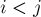
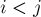

MAXimal
добавлено: 11 Jun 2008 11:27
редактировано: 27 Dec 2008 16:39
Содержание [скрыть]
Игра Пятнашки: существование решения
Напомним, что игра представляет собой поле  на , на котором расположены фишек, пронумерованных числами от
на , на котором расположены фишек, пронумерованных числами от  до , а одно поле оставлено пустым. Требуется, передвигая на каждом шаге какую-либо фишку на свободную позицию, прийти в конце концов к следующей позиции:
до , а одно поле оставлено пустым. Требуется, передвигая на каждом шаге какую-либо фишку на свободную позицию, прийти в конце концов к следующей позиции:
Игру Пятнашки ("15 puzzle") изобрёл в 1880 г. Нойес Чэпман (Noyes Chapman).
Существование решения
Здесь мы рассмотрим такую задачу: по данной позиции на доске сказать, существует ли последовательность ходов, приводящая к решению, или нет.
Пусть дана некоторая позиция на доске:
где один из элементов равен нулю и обозначает пустую клетку .Рассмотрим перестановку:
(т.е. перестановка чисел, соответствующая позиции на доске, без нулевого элемента)Обозначим через  количество инверсий в этой перестановке (т.е. количество таких элементов
количество инверсий в этой перестановке (т.е. количество таких элементов  и , что , но a_j">).
и , что , но a_j">).
Далее, пусть  — номер строки, в которой находится пустой элемент (т.е. в наших обозначениях .
— номер строки, в которой находится пустой элемент (т.е. в наших обозначениях .
Тогда, решение существует тогда и только тогда, когда чётно.
Реализация
Проиллюстрируем указанный выше алгоритм с помощью программного кода:
int a[16]; for (int i=0; i<16; ++i) cin >> a[i]; int inv = 0; for (int i=0; i<16; ++i) if (a[i]) for (int j=0; j<i; ++j) if (a[j] > a[i]) ++inv; for (int i=0; i<16; ++i) if (a[i] == 0) inv += 1 + i / 4; puts ((inv & 1) ? "No Solution" : "Solution Exists");
Доказательство
Джонсон (Johnson) в 1879 г. доказал, что если нечётно, то решения не существует, а Стори (Story) в том же году доказал, что все позиции, для которых чётно, имеют решение.Однако оба эти доказательства были достаточно сложны.
В 1999 г. Арчер (Archer) предложил значительно более простое доказательство (скачать его статью можно здесь).